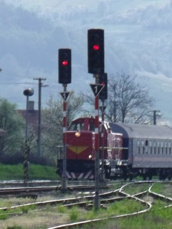
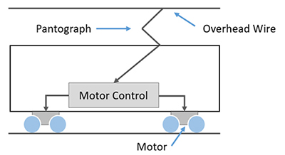
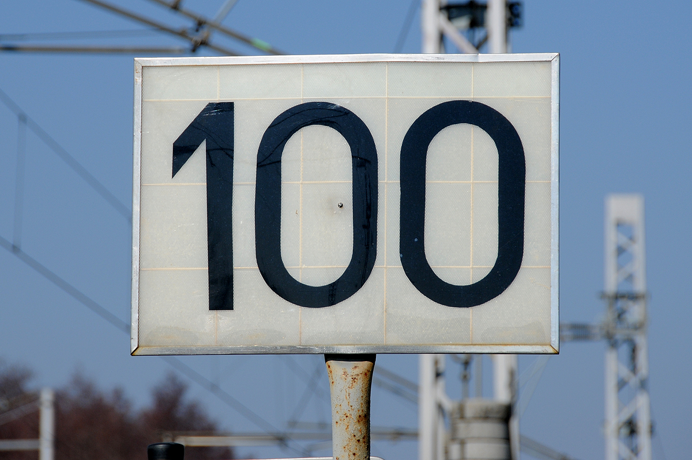
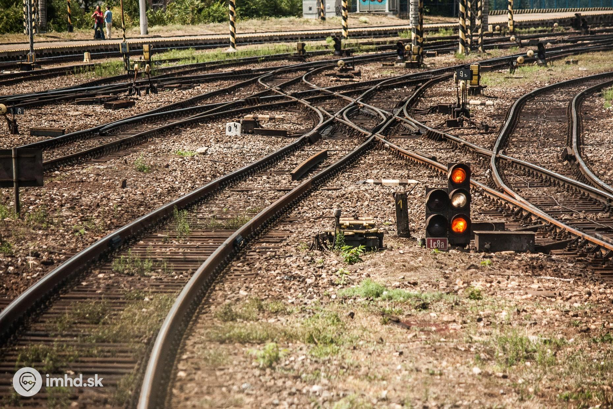

Pojmy... Časté otázky...
Návestidlá/Semafóry na tratiach
Návestidlo
Návestidlo je technické zariadenie, pomôcka, predmet, ktorým sa dáva návesť.
Návestidlá v železničnej doprave
Oddielové návestidlo autobloku nachádzajúce sa na trati Brno - Česká Třebová, signalizujúce voľný traťový oddiel. V popredí vidno stĺpik s telefónom označený T
Návestidlá v železničnej doprave určujú rýchlosť, alebo spôsob jazdy vozidiel na trati, alebo upozorňujú na rôzne skutočnosti (obmedzenie dopravy, dĺžka zábrzdnej vzdialenosti a podobne).
Delenie návestidiel v železničnej doprave:
Hlavné návestidlá (svetelné, mechanické (jedno, dvoj a trojramenné))
vchodové
odchodové
cestové
oddielové
krycie
predzvesti
svetelné
mechanické
predzvesté upozorňovadlá
vzdialenostné upozorňovadlá
návestidlá pre vlakové zabezpečovacie zariadenie
návestidlá pre elektrickú prevádzku
Základná návesť vchodových, odchodových, cestových a oddielových návestidiel (okrem autobloku) je návesť Stoj. Krycie a oddielové návestidlá autobloku majú základnú návesť Voľno. Návestidlá majú náter stožiara alebo označovací pás bielo-červený nerovnakej šírky (biele majú polovičnú dĺžku ako červené – platné pre vlaky aj pre posun) alebo rovnakej šírky (platné len pre vlaky). Oddielové návestidlá autobloku majú biely náter stožiara alebo biely označovací pás. Pri takto označených návestidlách, má návesť Stoj permisívny význam.

Elektrocká trakcia (pohon vlakov)
Prvé vozidlá boli najčastejšie konštruované ako dvojnápravové, od roku 1912 i štvornápravové, motorové vozne. Iba lesná železnica Ľubochňa – Močidlá použila dvojnápravové rušne usporiadania Bo a na slovenskom úseku železnice Bratislava – Viedeň sa používali štvornápravové rušne usporiadania Bo‘Bo‘.
Ich elektrická výzbroj, napájaná trolejovým jednosmerným napätím 550-750, neskôr i 1650 V, pozostávala z jednosmerných sériových trakčných motorov, tlapovo uložených na nápravách vozňa a riadených priamo ovládaným kontrolérom, ktorý reguloval výkon trakčných motorov zmenou napájacieho napätia zaraďovaním sériovo radených odporov do ich prúdového okruhu. Motory prvých vozidiel boli zvyčajne radené trvalo v sérii, pri neskorších konštrukciách sa rozšírili možnosti ich regulácie prepínaním zo sériového na paralelné, pri štvornápravových motorových vozňoch i sérioparalelné zapojenie.

Elektrický prúd bol do vozidla privádzaný prostredníctvom lýrového alebo už i pantografového zberača. Ochrana elektrickej výzbroje vozidiel pozostávala spravidla z tavných poistiek chrániacich pred preťažením a z rýchlovypínača, zabezpečujúceho ochranu predovšetkým pred bleskom. Vozidlá boli brzdené ručnou, elektrickou odporovou a s výnimkou trate Tr. Teplá – Tr. Teplice i priebežnou tlakovou brzdou.
Systém napájania prvých elektrifikovaných železníc pozostával z parnej, vodnej alebo dieslovej elektrárne, produkujúcej najčastejšie striedavý prúd s napätím 3300-5250 V, ktorý bol v meniarňach transformovaný a usmerňovaný prostredníctvom motorgenerátorov. Prevádzkové špičky a výpadky dodávky prúdu z elektrární boli pokrývané z akumulátorov, doplňovaných Piraniho agregátom. Trolejové vedenie bolo spočiatku jednoduché, neskôr i s oceľovým nosným lanom, a zvyčajne rozdelené na menšie úseky s príslušnými odpojovačmi, pričom sa k nim privádzal prúd zvláštnym napájacím vedením, neseným stožiarmi trakčného vedenia.
Ako rušňo vodič zistí ako rýchlo má ísť?
Jetu viacero faktorov, ktoré treba vysvetliť. Každá trať má svoju prevádzkovú rýchlosť, ktorá sa musí dodržovať. Čiže rušňov. vždy vie koľko môže ísť maximálnov rýchlosťov bez žiadnych obmedzení.
Niektoré úseky na trati nemusia byť prispôsobené na max. rýchlosť traťe preto ju treba zmenšíť. Na to slúži takzvane rýchlostník, ktorý ukáže rušňovodičovy ako rýchlo má ísť.

Ďalší prvok, ktorí obmedzuje rýchlosť na trati je návestidlo (konkrétne svetelná farebná kombinácia).

Napr. na obrázku je vidieť obmedzenie rýchlosti na 40 km/h